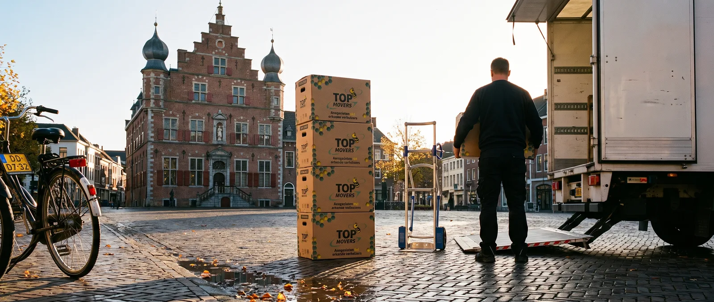
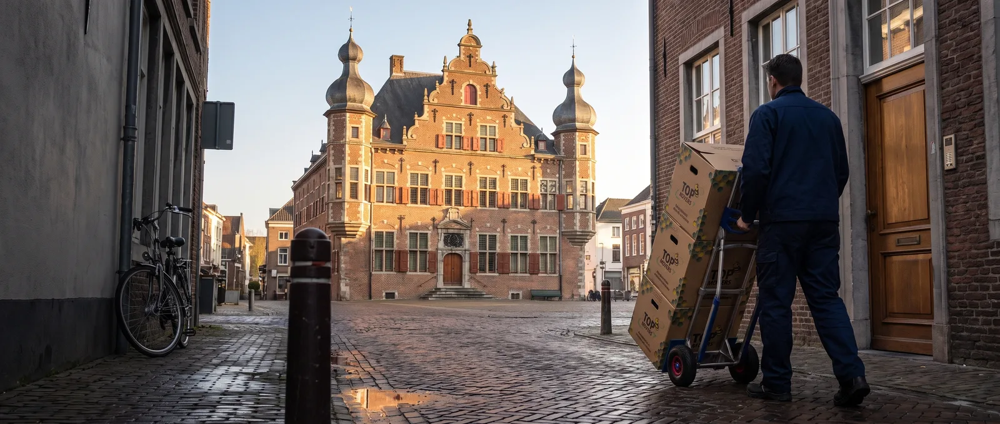
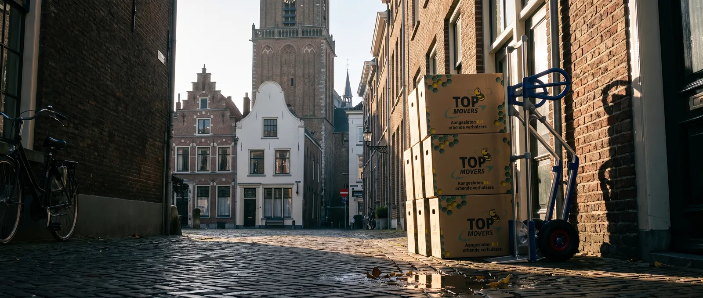
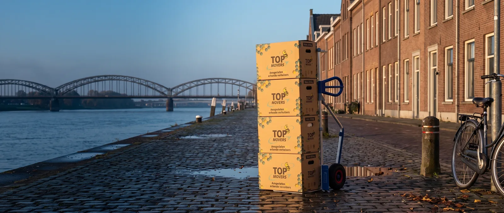
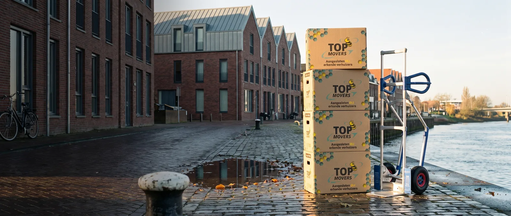
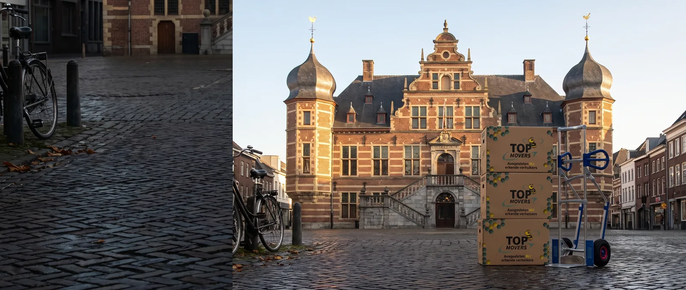

De band toont exact wat er straks in beeld staat: 1920 bij 498, met de sluier en een voorbeeldkop eroverheen. Klap "hele beeld" open om de volledige generatie te zien.
Alle zes hebben dezelfde fout: de twee kleine regels onder het TOP MOVERS-logo op de dozen zijn verhaspeld ("erkande verhulkers"). Het logo zelf klopt. Dat is op het gekozen beeld (a2) hersteld met _werk/hero-venlo/retouche.py; de andere vijf zijn onbewerkt.





